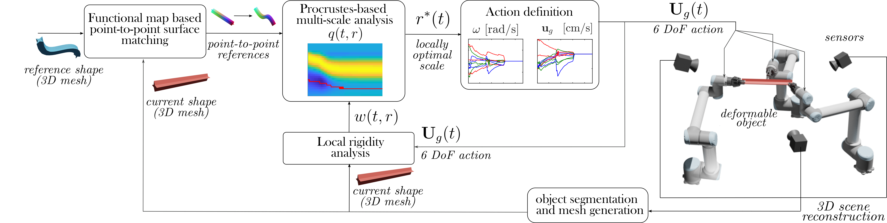

1 Introduction
object deformation processes has multiple applications such as manipulation-related tasks performed in industrial processes, surgical procedures or home-robotics. The wide variety of tasks and object types hinders the process of classifying and contextualising control strategies. This paper focuses on the shape control task, which is defined in surveys of the deformable object manipulation literature (e.g., (Herguedas et al., 2019; Sanchez et al., 2018; Yin et al., 2021)). Within the deformable object manipulation context, these surveys propose different criteria for the classification of objects, control strategies or perception methods. In (Sanchez et al., 2018), a deformable object classification is proposed. Based on physical and shape criteria, (Sanchez et al., 2018) classifies objects into cloth-like, linear, planar and solid objects. Within the manipulation tasks, they include the shape control problem for planar objects and sub-divide it into single point and multiple points shape control. Survey (Yin et al., 2021) includes a classification of objects according to their spatial dimensions and categorises them into 1D, 2D and 3D objects. Regarding the deformable object perception, (Herguedas et al., 2019) classifies the perception of deformable objects into: force-based, vision-based, and both vision and force-based perception. Focusing more on vision-based sensing, (Yin et al., 2021) includes control-related concepts such as state estimation, model, state-template or parameter identification in its perception section.

1.1 Related work
Some shape control methods rely on the use of Jacobian matrices that model the object deformation dynamics in a local manner. This is the case of (Berenson, 2013) in which the stretch limits of the objects and gripper collisions are considered. In (Navarro-Alarcón et al., 2013), the Jacobian matrix is estimated from visual-features and used to control feedback points of elastic objects. In (Shetab-Bushehri et al., 2022) and (Shetab-Bushehri et al., 2022), the authors exploit the As-Rigid-As-Possible deformation model (ARAP (Sorkine and Alexa, 2007)) in order to achieve shape control. Both approaches are validated through several experiments. Another Jacobian computation approach is presented in (Navarro-Alarcon and Liu, 2017), where the Jacobian matrix parameters are estimated with the use of truncated Fourier series of the 2D object's contour (i.e. the object's 1D closed contour embedded in 2D). The method is validated in experiments that involve an active and a passive gripper. Using Fourier series as well, dual-arm flexible cable manipulation experiments are presented in (Zhu et al., 2018). Cable manipulation is also tackled in (Sintov et al., 2020), (Lagneau et al., 2020) and (Lv et al., 2022). In the former, the main-connectivity of the cable's free configuration space is captured by a simplified pre-computed descriptor that allows to numerically solve the cable's ODE at a reduced cost. The method in (Lagneau et al., 2020) presents a B-spline based model that relies on 3D tracking wires with the use of a particle filter. The system proposed in (Lv et al., 2022) models collisions, contacts and frictions between cables and a plane in the workspace.
Making use of an adaptive deformation model, experiments involving materials such as foam, meat or plastic are carried out satisfactorily in (Navarro-Alarcon et al., 2016). In (Zhu et al., 2021), a Principal Component Analysis (PCA) is applied to the 2D contour of the object's silhouette. In (Aranda et al., 2020), real experiments involving large isometric deformations on planar objects are carried out. This method uses monocular perception and a Shape-from-Template (SfT) based algorithm. Image contour moments are used to define a sliding control strategy to control the shape of objects that range from soft to rigid (articulated) (Qi et al., 2022). Their method is validated with a stability proof and experiments with a dual-arm robot setup.
In (Hu et al., 2018), a 3D deformable object servo control based on a Gaussian Process Regression (GPR) online learned model is presented. The method in (López-Nicolás et al., 2020) focuses on deformable object transport and introduces a consensus-based deformation model for the manipulation of broad flexible objects with the use of a large number of manipulators. Two heuristic methods and a neural network for shaping non-prehensile materials with plastic deformation characteristics (not elastic) are introduced and compared in(Cherubini et al., 2020). They acquire desired shapes by pushing kinetic sand with adapted robotic arms. For more state of the art publications we refer the reader to the special issue (J. Zhu et al., 2022) which collects a variety of publications focusing on the manipulation of deformable objects.
1.2 Proposed method and contributions
In the deformable object manipulation literature, some methods focus on specific tasks (e.g., object cutting (Han et al., 2020)) or specific object types (e.g., flexible PCB manipulation in (Li et al., 2018)). In this paper we propose a method for shape control that tackles the manipulation of texture-less objects that may undergo large 3D deformations (i.e. object's curvature, length, area or volume can globally vary in 3D space). Note that we focus on shape control, meaning that object transport (e.g., considering error with a rigid component such as an arbitrary translation and rotation of the object) is outside our scope. The goal is to define a control system that allows to manipulate the shape of a deformable object towards a desired target shape with the use of robots and vision sensors (Fig. 1).
Objects are assumed to be large-strain (i.e. to have low Young's modulus) and we assume there is no information about their specific physical properties (density, stiffness, etc.). We focus on objects that present certain rigidity such that gravity or inertia do not dominate their behaviour (e.g. clothes are not considered). Our assumptions include proper object perception (no significant occlusions) and knowledge of the initial gripper configuration. While better results might be achieved with appropriate gripper configuration, our method does not rely on the assumption that the grippers are ideally positioned on the object. The effects of gravity and inertia are disregarded given the assumption that deformations are gradual and slow. As the objects may be texture-less, our method does not rely on visual descriptors.
Regarding the control strategy (see Fig. 1), in section 2 we propose a multi-scale analysis to determine the scale on which our novel control strategy should be focused at each time instant during the deformation process (scale defined as the topological distance at which surface points lie from a gripper). We do so under what we defined as the local rigidity assumption. We validate the assumption by means of a multi-scale Procrustes analysis, i.e. we measure the extent to which the object can be considered to be moving rigidly at each scale. Using this information, we define a 6 DoF control action for each one of the grippers that are manipulating the object. We provide a stability analysis (section 3) and several simulation and experiments (section 4) that validate our proposed system.
In the following, we will discuss and analyse the main contributions and contextualise them in the literature.
- ıtem We define a novel shape control framework for 3D deformations of both planar and volumetric objects. Our method is the first 3D shape control system that, with the use of functional maps, performs a holistic shape analysis. That is, thanks to the novel application of (Melzi et al., 2019) in a real shape control setup, we define our 3D control strategy and shape error by analysing all of the object's perceived geometry (regardless of its visual texture) and consider deformations at different scales. Most existing methods tackle 1D (linear) objects (e.g. (Lagneau et al., 2020; Zhu et al., 2020; Huo et al., 2022; Lv et al., 2022; Matsuno et al., 2006)) or confine their analysis to 2D contours (e.g., (Navarro-Alarcon and Liu, 2017; Qi et al., 2022; Cuiral-Zueco and López-Nicolás, 2021; Zhu et al., 2021)). Few methods address 3D deformations of planar and/or volumetric objects, e.g. (Navarro-Alarcon et al., 2016; Hu et al., 2019; Hu et al., 2018). Rather than addressing holistic shape control, these methods present task-oriented approaches. For example, they base their shape analysis and errors on a few discrete features such as a segment's curvature, the object's centroid or the position of a reduced number of feature points. ıtem We prove local asymptotic stability of our control system and further validate the method with experiments. Related works also study local stability (Navarro-Alarcon et al., 2016; Hu et al., 2018); other works such as (Hu et al., 2019) do not provide stability analysis nor guarantees system convergence. ıtem We validate our proposed model using real data from our experiments and compare it against other existing baselines. The comparisons show that our model is suitable for shape control given its proper balance between accuracy and computational time cost. ıtem Our proposed control method does not require a priori information or initial exploration of the object's behaviour. Although online-updated, methods such as (Navarro-Alarcon et al., 2016) or (Hu et al., 2018) require an initial exploration of the object behaviour and/or a random initialisation before converging to what they refer to as a good enough initial model.